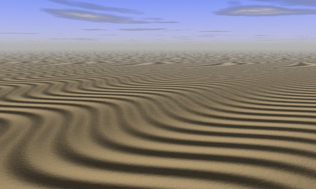
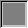
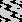
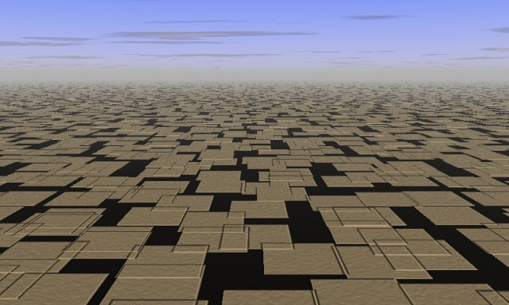
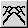
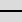

Using a Geomorph height field as
a
normal map
The scene crack_bumptest.pov designed
when developping the crack
network tool can be used with other kind of height field with
interesting
results. Here are two examples.

This wavy height field was created this way:
- Create a "uniform" gray map  (the default when you start
Geomorph).
- Use the "waves" tool :
- In tab 1 (with an up / down wave as default), set the amplitude
to 10 or the like, and the period
to 6.
- In tab 2 (with a north / south wave as default), set the
amplitude to 55 or the like, the period to 9
and rotate by 90°.
- Use the default camera 3, rotate it by 135° in the preview.
- Render
 with crack_bumptest.pov.
with crack_bumptest.pov.

This height map was created this way:
- Choose a "progressive sum of surfaces"  height
field.
- In the creation dialog and in the "Primitive surface" ->
"Shape filter" subdialog, choose the "no filter" building block .
- Continuing in the creation dialog, roll down the "Wave length
control" subdialog,
initialize all the wave lengths to 0 (there is a button for this) and
set the 64 wave length to 50-60.
- Render with crack_bumptest.pov.
In the creation dialog, you can also try different XY displacement
levels.
_________________________
Written in December 2006
Contact:
Patrice St-Gelais